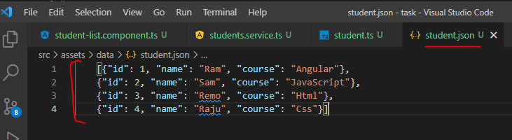
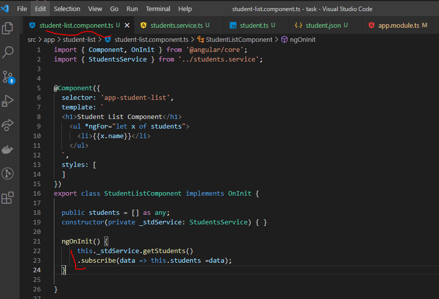

Error Handling
- First We need to import HTTPClient module into app.module.ts file.
- To use service, we should declare HttpClient as dependency in the constructor.
- After above steps now we can send the HTTP Get request.
- We need to send the http Get request from the getStudents(). So, we can't write the hard coded data in this method.
- For this hardcoded small data we can't maintain the server, so I have created the JSON file and store the data into that file and JSON file Located under assets/data/student.ts. Now this file act as a serve.
- I took one variable and store the json file path in that variable.
- To cast that we need to ready the one format of data for that purpose we are creating one interface into APP folder like(student.ts)file.
- After ready the interface jump into the service file and mouse hover on GET at that time it will return 1 observable.To receive that data required one observable.

- Now go to the required component and Subscribe the services.
